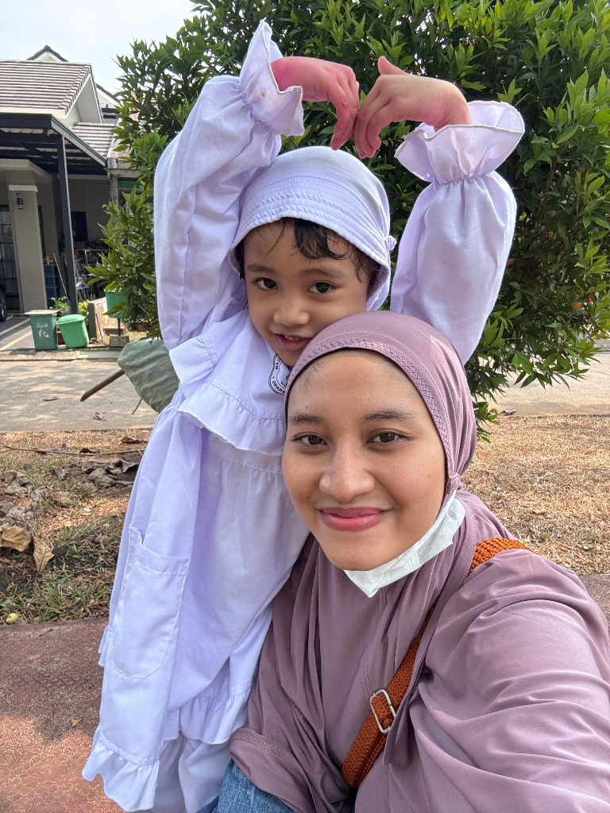

Buka kamera iPhone Anda lalu arahkan ke QR Code berikut untuk mengontrol slide tanpa kabel:
Ibu Dwi Yuniar Sari (Mama Shanum)

Halo anak-anak hebat! Hari ini kita akan belajar membuat Salad Buah yang segar, manis, dan sehat bersama:
Klik pada gambar alat untuk mendengar namanya bersuara! 🔊
Rasanya manis, segar, lembut, dan penuh vitamin! Selamat mencoba membuat di rumah ya anak-anak hebat!